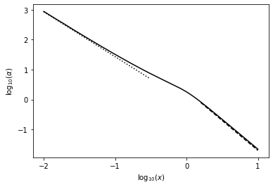
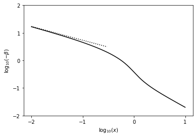
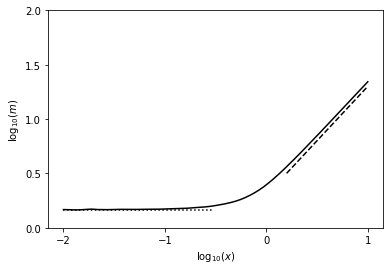

Collapse
Numerical integration of the similarity equations for the collapse of an isothermal sphere.
Required dependencies
We load numpy, scipy.integrate.solve_ivp to solve an initial value problem for our system of ODEs, and matplotlib for plotting the solutions.
import numpy as np
from scipy.integrate import solve_ivp
from matplotlib import pyplot
System of equations
We want to solve for \alpha(x), \beta(x) given:
\left [ (x-\beta)^2-1 \right] \frac{1}{\alpha} \frac{\partial \alpha}{\partial x} = \left[ \alpha - \frac{2}{x} (x-\beta) \right] (x-\beta)
\left [ (x-\beta)^2 -1 \right] \frac{\partial \beta}{\partial x} = \left[ \alpha (x-\beta) - \frac{2}{x} \right] (x-\beta)
Let \alpha = y_1, \beta = y_2. Then we have
y_1'=\frac{y_1}{[(x-y_2)^2-1]}[y_1-\frac{2}{x}(x-y_2)](x-y_2)
y2'=\frac{1}{[(x-y_2)^2-1]}[y_1(x-y_2)-\frac{2}{x}](x-y_2)
Now implementing the differential functions. Here y is an array of the two functions [y_1, y_2] and the function returns the two derivatives, [y_1',y_2'].
def collapse(x, y):
xmb=x-y[1]
y1p=y[0]/(xmb**2-1)*(y[0]-2./x*xmb)*xmb
y2p=1./(xmb**2-1)*(y[0]*xmb-2./x)*xmb
return np.vstack((y1p, y2p))
Initial conditions
Set up the initial conditions. From Shu 1977 (SELF-SIMILAR COLLAPSE OF ISOTHERMAL SPHERES AND STAR FORMATION), at large x the solutions should asymptote to \alpha=A/x^2, \beta=-(A-2)/x, m=Ax for A>2.
A=2.2
x0=10.
a0=A/x0**2
b0=-(A-2)/x0
Run the solver
Call the solve_ivp function to solve the system of ODEs, and check it converged. Give it the interval over which to solve (running backwards, from large x to small); initial values; and (optionally) the times to store the solution at in t_eval. Status=0 means success.
res=solve_ivp(collapse, (x0, 0.01), [a0, b0], vectorized=True, method='RK45', t_eval=np.logspace(-2, np.log10(x0), 200)[::-1])
print(res.status)
0
Plot the solutions
\alpha and \beta have already been evaluated on the grid requested and are stored in res. Also calculate m = x^2 \alpha (x - \beta).
For comparison also plot the isothermal sphere solutions at large x and asymptotic solutions at small x.
# Overall solutions from solver
x_plot=res.t[::-1]
alpha_plot=res.y[0][::-1]
beta_plot=res.y[1][::-1]
m_plot=x_plot**2*alpha_plot*(x_plot-beta_plot)
# Isothermal sphere solutions
x_iso=np.logspace(0.2, np.log10(np.max(x_plot)), 100)
alpha_iso=2/x_iso**2
m_iso=2*x_iso
# Small-x asymptotic solutions
m0=np.min(m_plot)
x_sm=np.logspace(np.log10(np.min(x_plot)), np.log10(0.3), 100)
beta_sm=-np.sqrt(2*m0/x_sm)
alpha_sm=np.sqrt(m0/2/x_sm**3)
pyplot.plot(np.log10(x_plot), np.log10(alpha_plot), 'k')
pyplot.plot(np.log10(x_iso), np.log10(alpha_iso), 'k--')
pyplot.plot(np.log10(x_sm), np.log10(alpha_sm), 'k:')
pyplot.xlabel(r'$\log_{10}(x)$')
pyplot.ylabel(r'$\log_{10}(\alpha)$')
pyplot.gca().set_xticks(np.arange(-2, 1.1, 1))
pyplot.show()
pyplot.figure()
pyplot.plot(np.log10(x_plot), np.log10(-beta_plot), 'k')
pyplot.plot(np.log10(x_sm), np.log10(-beta_sm), 'k:')
pyplot.xlabel(r'$\log_{10}(x)$')
pyplot.ylabel(r'$\log_{10}(-\beta)$')
pyplot.gca().set_xticks(np.arange(-2, 1.1, 1))
pyplot.gca().set_yticks(np.arange(-2, 2.1, 1))
pyplot.show()
pyplot.figure()
pyplot.plot(np.log10(x_plot), np.log10(m_plot), 'k')
pyplot.plot(np.log10(x_iso), np.log10(m_iso), 'k--')
pyplot.plot(np.log10(x_sm), np.log10(m0)*np.ones_like(x_sm), 'k:')
pyplot.xlabel(r'$\log_{10}(x)$')
pyplot.ylabel(r'$\log_{10}(m)$')
pyplot.gca().set_xticks(np.arange(-2, 1.1, 1))
pyplot.gca().set_yticks(np.arange(0, 2.1, 0.5))
pyplot.show()



Download this page as a Jupyter notebook or as a standalone Python script.